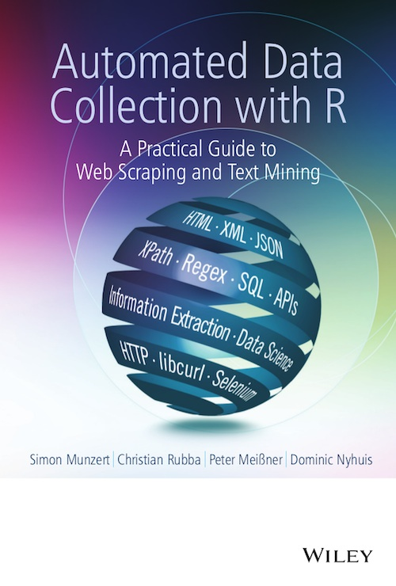

Welcome to my website! I'm a Ph.D. candidate at the Department of Politics and Public Administration, University of Konstanz.
I'm a research assistant at the Chair for Survey Research at the University of Konstanz, Germany. Currently I'm working on my PhD which deals with issues of public opinion measurement and election forecasting. At the university, my job is to teach undergrads and grads how to construct standardized questionnaires and to manage surveys in the field, how to forecast elections and how to use R for web scraping and text mining. If you want to know more about me, have a look at my CV.
empty
empty
empty
Together with Christian Rubba, Peter Meißner and Dominic Nyhuis, I've written a book, Automated Data Collection with R - A Practical Guide to Web Scraping and Text Mining. The book has been published at John Wiley & Sons in 2015 and has its own homepage.
